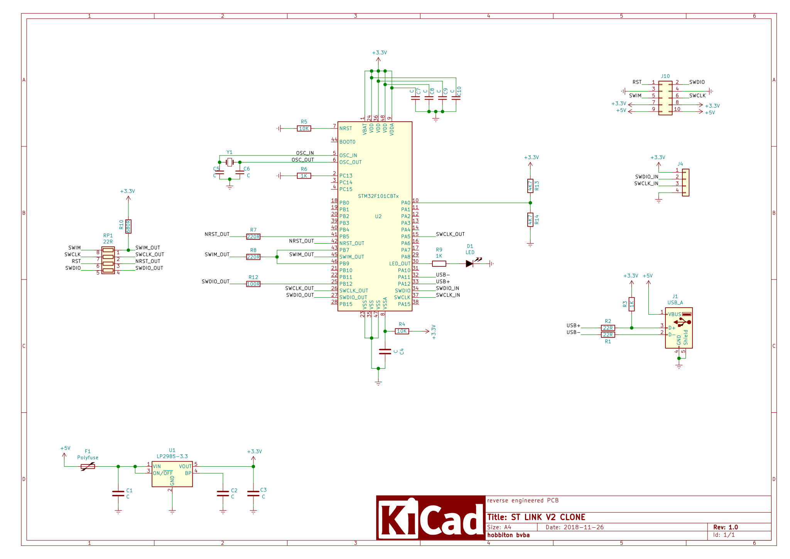
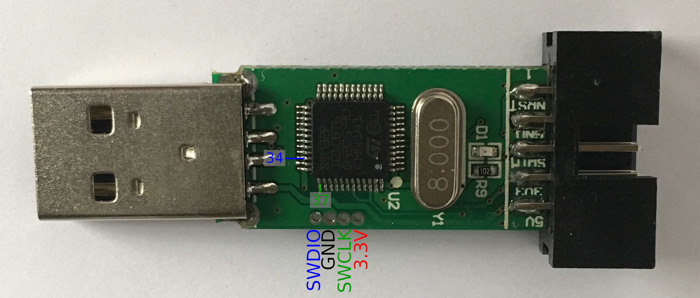
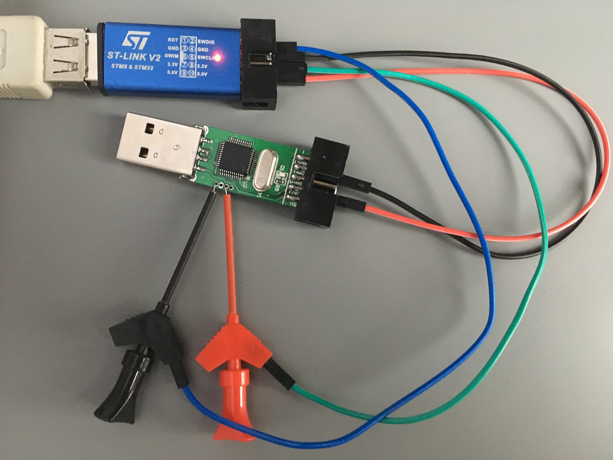
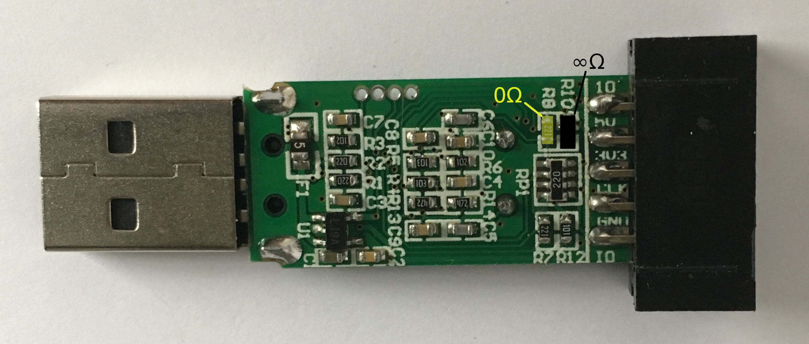

Repurpose an ST-Link clone
2018-11-18The well known ST-Link clones are built around a quite useful STM32 microcontroller, they come in a small aluminium cover with a USB A connector and have 10 pins exposed. Ideal for repurposing !
The STM23F101CBT6 is a ARM Cortex-M3 core microcontroller with 128KB flash, 16KB SRAM and a slew of timers, buses and GPIOs.
As there are only 10 pins externally available the options for repurposing are not endless but it's a possible good starting point for quite some projects.
| Con Pinn | ST-Link Function | MCU Pin | Main function | Alternate functions |
|---|---|---|---|---|
| 1 | RST | 42 | GPIO PB6 | I2C1_SCL, TIM4_CH1, USART1_TX |
| 2 | SWDIO | 27 | GPIO PB14 | SPI2_MISO, USART3_RTS |
| 3, 4 | GND | |||
| 5 | SWIM | 45 | GPIO PB8 | TIM4_CH3 |
| 6 | SWCLK | 15 | GPIO PA5 | SPI1_SCK, ADC_IN5 |
| 6 | SWCLK | 26 | GPIO PB13 | SPI2_SCK, USART3_CTS |
| 7, 8 | 3.3V | |||
| 9, 10 | 5V |
If you want to avoid soldering and/or cutting existing traces only 5 GPIOs are externally available on 4 pins, but for less than 2€ it's hard to find a device that is as capable in a small enclosure with an attached USB connector.
Without any hardware modifications you have 5 GPIOs of which 2 are PWM capable (TIM4_CH1 and TIM4_CH3) and 1 possible ADC pin (ADC_IN5)

The schema was drawn based on the PCB of one my devices, yours could be a little different but the MCU pin to output pin mapping should be the same, otherwise the ST Link firmware would not work.
Prerequisites
- (at least) 2 ST-Link clones, if you want to repurpose one you need an other one to do the programming if you don't have access to an other SWD programmer.
- OpenOCD, you have to unlock the microcontroller before you can reflash the firmware and/or the bootloader, OpenOCD is the tool I use. Maybe there are other tools that can unlock a STM32 but they're unknown to me. OpenOCD is also used to erase and flash the firmware.
- jumper wires with at least on one side a dupont style connector, if you've got minigrabbers you don't have to solder programming wires
Programming pins
The ST-Link clones have programming connections on the PCB. You can access them by sliding the cover of, the cover is not glued close but you can feel some friction.

The PCB should look like the annotated picture, there are ST-Link clones where the pinouts are different but it's quite easy to measure your clone's pinout with a multimeter in continuity testing mode. The SWDIO connection should be connected to pin 34 (the pin numbers start with pin 1 at the location of the dot on the MCU) and SWCLK is pin 37.
Ground (GND) can be tested using the GND pin on the 10 pin header, the same goes for the 3.3V pin. It is not necessary to find the GND and 3.3V pins to program the clone because you can use the connections on the pin header, it is a good idea to measure it anyway to make sure you're right about the SWDIO and SWCLK connections.

If you connect ground and 3.3V using the 10 pin header you should be able to use mini grabbers for the SWDIO an SWCLK signals.
Flashing
Before you can flash your own firmware to the device you have to unlock it using OpenOCD.
$ openocd -f interface/stlink-v2.cfg -f target/stm32f1x.cfg -c "init" -c "halt" \ -c "stm32f1x unlock 0" -c "shutdown" Open On-Chip Debugger 0.10.0 Licensed under GNU GPL v2 For bug reports, read http://openocd.org/doc/doxygen/bugs.html Info : auto-selecting first available session transport "hla_swd". To override use 'transport select <transport>'. Info : The selected transport took over low-level target control. The results might differ compared to plain JTAG/SWD adapter speed: 1000 kHz adapter_nsrst_delay: 100 none separate Info : Unable to match requested speed 1000 kHz, using 950 kHz Info : Unable to match requested speed 1000 kHz, using 950 kHz Info : clock speed 950 kHz Info : STLINK v2 JTAG v28 API v2 SWIM v7 VID 0x0483 PID 0x3748 Info : using stlink api v2 Info : Target voltage: 3.249867 Info : stm32f1x.cpu: hardware has 6 breakpoints, 4 watchpoints target halted due to debug-request, current mode: Thread xPSR: 0x61000000 pc: 0x08003d5a msp: 0x20004e38 Info : device id = 0x20036410 Info : flash size = 128kbytes stm32x unlocked. INFO: a reset or power cycle is required for the new settings to take effect. shutdown command invoked
Next power cycle the device by removing the 3.3V power wire.
You can now erase the flash and write your own firmware to it.
$ openocd -f interface/stlink-v2.cfg -f target/stm32f1x.cfg -c "init" -c "halt" \ -c "flash write_image erase hello 0x8000000" -c "shutdown" Open On-Chip Debugger 0.10.0 Licensed under GNU GPL v2 For bug reports, read http://openocd.org/doc/doxygen/bugs.html Info : auto-selecting first available session transport "hla_swd". To override use 'transport select <transport>'. Info : The selected transport took over low-level target control. The results might differ compared to plain JTAG/SWD adapter speed: 1000 kHz adapter_nsrst_delay: 100 none separate Info : Unable to match requested speed 1000 kHz, using 950 kHz Info : Unable to match requested speed 1000 kHz, using 950 kHz Info : clock speed 950 kHz Info : STLINK v2 JTAG v28 API v2 SWIM v7 VID 0x0483 PID 0x3748 Info : using stlink api v2 Info : Target voltage: 3.249867 Info : stm32f1x.cpu: hardware has 6 breakpoints, 4 watchpoints auto erase enabled Info : device id = 0x20036410 Info : flash size = 128kbytes target halted due to breakpoint, current mode: Thread xPSR: 0x61000000 pc: 0x2000003a msp: 0x20004e20 wrote 21504 bytes from file hello in 1.222309s (17.181 KiB/s) shutdown command invoked
Releasing more pins
If you need more than the standard broken out pins and are not afraid to solder, small changes can bring some nice extras.

If you replace resistor R8 with a 0Ω one or a solder bridge, you connect both MCU pin 43 (PB7) and MCU pin 46 (PB9) with connector pin 5 (SWIM). It's probably also a good idea to remove the 680Ω pull up resistor R10 just next to R8 if you don't need it for you application.
With this simple soldering action you can now use USART1 on pins 42 (TX) and 43 (RX) or even I2C1 on the same pins 42 (SCL) and 43 (SCA) if you manage to sort out the I²C bus pull ups externally.